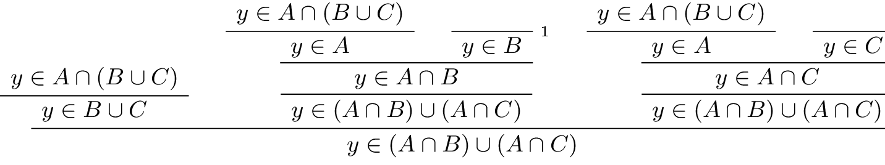

11. Sets¶
We have come to a turning point in this textbook. We will henceforth abandon natural deduction, for the most part, and focus on ordinary mathematical proofs. We will continue to think about how informal mathematics can be represented in symbolic terms, and how the rules of natural deduction play out in the informal setting. But the emphasis will be on writing ordinary mathematical arguments, not designing proof trees. Lean will continue to serve as a bridge between the informal and formal realms.
In this chapter, we consider a notion that has come to play a fundamental role in mathematical reasoning, namely, that of a “set.”
11.1. Elementary Set Theory¶
In a publication in the journal Mathematische Annalen in 1895, the German mathematician Georg Cantor presented the following characterization of the notion of a set (or Menge, in his terminology):
By a set we mean any collection M of determinate, distinct objects (called the elements of M) of our intuition or thought into a whole.
Since then, the notion of a set has been used to unify a wide range of abstractions and constructions. Axiomatic set theory, which we will discuss in a later chapter, provides a foundation for mathematics in which everything can be viewed as a set.
On a broad construal, any collection can be a set; for example, we can consider the set whose elements are Ringo Star, the number 7, and the set whose only member is the Empire State Building. With such a broad notion of set we have to be careful: Russell’s paradox has us consider the set \(S\) of all sets that are not elements of themselves, which leads to a contradiction when we ask whether \(S\) is an element of itself. (Try it!) The axioms of set theory tell us which sets exist, and have been carefully designed to avoid paradoxical sets like that of the Russell paradox.
In practice, mathematicians are not so freewheeling in their use of sets. Typically, one fixes a domain such as the natural numbers, and consider subsets of that domain. In other words, we consider sets of numbers, sets of points, sets of lines, and so on, rather than arbitrary “sets.” In this text, we will adopt this convention: when we talk about sets, we are always implicitly talking about sets of elements of some domain.
Given a set \(A\) of objects in some domain and an object \(x\), we write \(x \in A\) to say that \(x\) is an element of \(A\). Cantor’s characterization suggests that whenever we have some property, \(P\), of a domain, we can form the set of elements that have that property. This is denoted using “set-builder notation” as \(\{ x \mid P(x) \}\). For example, we can consider all the following sets of natural numbers:
\(\{n \mid \mbox{$n$ is even} \}\)
\(\{n \mid \mbox{$n$ is prime} \}\)
\(\{n \mid \mbox{$n$ is prime and greater than 2} \}\)
\(\{n \mid \mbox{$n$ can be written as a sum of squares} \}\)
\(\{n \mid \mbox{$n$ is equal to 1, 2, or 3}\}\)
This last set is written more simply \(\{1, 2, 3\}\). If the domain is not clear from the context, we can specify it by writing it explicitly, for example, in the expression \(\{n \in \mathbb{N} \mid \text{$n$ is even} \}\).
Using set-builder notation, we can define a number of common sets and operations. The empty set, \(\emptyset\), is the set with no elements:
Dually, we can define the universal set, \(\mathcal U\), to be the set consisting of every element of the domain:
Given two sets \(A\) and \(B\), we define their union to be the set of elements in either one:
And we define their intersection to be the set of elements of both:
We define the complement of a set of \(A\) to be the set of elements that are not in \(A\):
We define the set difference of two sets \(A\) and \(B\) to be the set of elements in \(A\) but not \(B\):
Two sets are said to be equal if they have exactly the same elements. If \(A\) and \(B\) are sets, \(A\) is said to be a subset of \(B\), written \(A \subseteq B\), if every element of \(A\) is an element of \(B\). Notice that \(A\) is equal to \(B\) if and only if \(A\) is a subset of \(B\) and \(B\) is a subset of \(A\).
Notice also that everything we have said about sets so far is readily representable in symbolic logic. We can render the defining properties of the basic sets and constructors as follows:
\(\forall x \; (x \in \emptyset \leftrightarrow \bot)\)
\(\forall x \; (x \in \mathcal U \leftrightarrow \top)\)
\(\forall x \; (x \in A \cup B \leftrightarrow x \in A \vee x \in B)\)
\(\forall x \; (x \in A \cap B \leftrightarrow x \in A \wedge x \in B)\)
\(\forall x \; (x \in \overline A \leftrightarrow x \notin A)\)
\(\forall x \; (x \in A \setminus B \leftrightarrow x \in A \wedge x \notin B)\)
The assertion that \(A\) is a subset of \(B\) can be written \(\forall x \; (x \in A \to x \in B)\), and the assertion that \(A\) is equal to \(B\) can be written \(\forall x \; (x \in A \leftrightarrow x \in B)\). These are all universal statements, that is, statements with universal quantifiers in front, followed by basic assertions and propositional connectives. What this means is that reasoning about sets formally often amounts to using nothing more than the rules for the universal quantifier together with the rules for propositional logic.
Logicians sometimes describe ordinary mathematical proofs as informal, in contrast to the formal proofs in natural deduction. When writing informal proofs, the focus is on readability. Here is an example.
Theorem. Let \(A\), \(B\), and \(C\) denote sets of elements of some domain. Then \(A \cap (B \cup C) = (A \cap B) \cup (A \cap C)\).
Proof. Let \(x\) be arbitrary, and suppose \(x\) is in \(A \cap (B \cup C)\). Then \(x\) is in \(A\), and either \(x\) is in \(B\) or \(x\) is in \(C\). In the first case, \(x\) is in \(A\) and \(B\), and hence in \(A \cap B\). In the second case, \(x\) is in \(A\) and \(C\), and hence \(A \cap C\). Either way, we have that \(x\) is in \((A \cap B) \cup (A \cap C)\).
Conversely, suppose \(x\) is in \((A \cap B) \cup (A \cap C)\). There are now two cases.
First, suppose \(x\) is in \(A \cap B\). Then \(x\) is in both \(A\) and \(B\). Since \(x\) is in \(B\), it is also in \(B \cup C\), and so \(x\) is in \(A \cap (B \cup C)\).
The second case is similar: suppose \(x\) is in \(A \cap C\). Then \(x\) is in both \(A\) and \(C\), and so also in \(B \cup C\). Hence, in this case also, \(x\) is in \(A \cap (B \cup C)\), as required.
Notice that this proof does not look anything like a proof in symbolic logic. For one thing, ordinary proofs tend to favor words over symbols. Of course, mathematics uses symbols all the time, but not in place of words like “and” and “not”; you will rarely, if ever, see the symbols \(\wedge\) and \(\neg\) in a mathematics textbook, unless it is a textbook specifically about logic.
Similarly, the structure of an informal proof is conveyed with ordinary paragraphs and punctuation. Don’t rely on pictorial diagrams, line breaks, and indentation to convey the structure of a proof. Rather, you should rely on literary devices like signposting and foreshadowing. It is often helpful to present an outline of a proof or the key ideas before delving into the details, and the introductory sentence of a paragraph can help guide a reader’s expectations, just as it does in an expository essay.
Nonetheless, you should be able to see elements of natural deduction implicitly in the proof above. In formal terms, the theorem is equivalent to the assertion
and the proof proceeds accordingly. The phrase “let \(x\) be arbitrary” is code for the \(\forall\) introduction rule, and the form of the rest of the proof is a \(\leftrightarrow\) introduction. Saying that \(x\) is in \(A \cap (B \cup C)\) is implicitly an “and,” and the argument uses \(\wedge\) elimination to get \(x \in A\) and \(x \in B \cup C\). Saying \(x \in B \cup C\) is implicitly an “or,” and the proof then splits on cases, depending on whether \(x \in B\) or \(x \in C\).
Modulo the unfolding of definition of intersection and union in terms of “and” and “or,” the “only if” direction of the previous proof could be represented in natural deduction like this:
In the next chapter, we will see that this logical structure is made manifest in Lean. But writing long proofs in natural deduction is not the most effective to communicate the mathematical ideas. So our goal here is to teach you to think in terms of natural deduction rules, but express the steps in ordinary English.
Here is another example.
Theorem. \((A \setminus B) \setminus C = A \setminus (B \cup C)\).
Proof. Let \(x\) be arbitrary, and suppose \(x\) is in \((A \setminus B) \setminus C\). Then \(x\) is in \(A \setminus B\) but not \(C\), and hence it is in \(A\) but not in \(B\) or \(C\). This means that \(x\) is in \(A\) but not \(B \cup C\), and so in \(A \setminus (B \cup C)\).
Conversely, suppose \(x\) is in \(A \setminus (B \cup C)\). Then \(x\) is in \(A\), but not in \(B \cup C\). In particular, \(x\) is in neither \(B\) nor \(C\), because otherwise it would be in \(B \cup C\). So \(x\) is in \(A \setminus B\), and hence in \((A \setminus B) \setminus C\).
Perhaps the biggest difference between informal proofs and formal proofs is the level of detail. Informal proofs will often skip over details that are taken to be “straightforward” or “obvious,” devoting more effort to spelling out inferences that are novel or unexpected.
Writing a good proof is like writing a good essay. To convince your readers that the conclusion is correct, you have to get them to understand the argument, without overwhelming them with unnecessary details. It helps to have a specific audience in mind. Try speaking the argument aloud to friends, roommates, and family members; if their eyes glaze over, it is unreasonable to expect anonymous readers to do better.
One of the best ways to learn to write good proofs is to read good proofs, and pay attention to the style of writing. Pick an example of a textbook that you find especially clear and engaging, and think about what makes it so.
Natural deduction and formal verification can help you understand the components that make a proof correct, but you will have to develop an intuitive feel for what makes a proof easy and enjoyable to read.
11.2. Calculations with Sets¶
Calculation is a central to mathematics, and mathematical proofs often involve carrying out a sequence of calculations. Indeed, a calculation can be viewed as a proof in and of itself that two expressions describe the same entity.
In high school algebra, students are often asked to prove identities like the following:
Proposition. \(\frac{n(n+1)}{2} + (n + 1) = \frac{(n+1)(n+2)}{2}\), for every natural number \(n\).
In some places, students are asked to write proofs like this:
Proof.
Mathematicians generally cringe when they see this. Don’t do it! It looks like an instance of forward reasoning, where we start with a complex identity and end up proving \(x = x\). Of course, what is really meant is that each line follows from the next. There is a way of expressing this, with the phrase “it suffices to show.” The following presentation comes closer to mathematical vernacular:
Proof. We want to show
To do that, it suffices to show
For that, it suffices to show
But this last equation is clearly true.
The narrative doesn’t flow well, however. Sometimes there are good reasons to work backward in a proof, but in this case it is easy to present the proof in a more forward-directed manner. Here is one example:
Proof. Calculating on the left-hand side, we have
On the right-hand side, we also have
So \(\frac{n(n+1)}{2} + (n + 1) = \frac{n^2 + 3n + 2}{2}\), as required.
Mathematicians often use the abbreviations “LHS” and “RHS” for “left-hand side” and “right-hand side,” respectively, in situations like this. In fact, here we can easily write the proof as a single forward-directed calculation:
Proof.
Such a proof is clear, compact, and easy to read. The main challenge to the reader is to figure out what justifies each subsequent step. Mathematicians sometimes annotate such a calculation with additional information, or add a few words of explanation in the text before and/or after. But the ideal situation is to carry out the calculation in small enough steps so that each step is straightforward, and needs no explanation. (And, once again, what counts as “straightforward” will vary depending on who is reading the proof.)
We have said that two sets are equal if they have the same elements. In the previous section, we proved that two sets are equal by reasoning about the elements of each, but we can often be more efficient. Assuming \(A\), \(B\), and \(C\) are subsets of some domain \(\mathcal U\), the following identities hold:
\(A \cup \overline A = \mathcal U\)
\(A \cap \overline A = \emptyset\)
\(\overline {\overline A} = A\)
\(A \cup A = A\)
\(A \cap A = A\)
\(A \cup \emptyset = A\)
\(A \cap \emptyset = \emptyset\)
\(A \cup \mathcal U = \mathcal U\)
\(A \cap \mathcal U = A\)
\(A \cup B = B \cup A\)
\(A \cap B = B \cap A\)
\((A \cup B) \cup C = A \cup (B \cup C)\)
\((A \cap B) \cap C = A \cap (B \cap C)\)
\(\overline{A \cap B} = \overline A \cup \overline B\)
\(\overline{A \cup B} = \overline A \cap \overline B\)
\(A \cap (B \cup C) = (A \cap B) \cup (A \cap C)\)
\(A \cup (B \cap C) = (A \cup B) \cap (A \cup C)\)
\(A \cap (A \cup B) = A\)
\(A \cup (A \cap B) = A\)
This allows us to prove further identities by calculating. Here is an example.
Theorem. Let \(A\) and \(B\) be subsets of some domain \(\mathcal U\). Then \((A \cap \overline B) \cup B = A \cup B\).
Proof.
Here is another example.
Theorem. Let \(A\) and \(B\) be subsets of some domain \(\mathcal U\). Then \((A \setminus B) \cup (B \setminus A) = (A \cup B) \setminus (A \cap B)\).
Proof.
Classically, you may have noticed that propositions, under logical equivalence, satisfy identities similar to sets. That is no coincidence; both are instances of boolean algebras. Here are the identities above translated to the language of a boolean algebra:
\(A \vee \neg A = \top\)
\(A \wedge \neg A = \bot\)
\(\neg \neg A = A\)
\(A \vee A = A\)
\(A \wedge A = A\)
\(A \vee \bot = A\)
\(A \wedge \bot = \bot\)
\(A \vee \top = \top\)
\(A \wedge \top = A\)
\(A \vee B = B \vee A\)
\(A \wedge B = B \wedge A\)
\((A \vee B) \vee C = A \vee (B \vee C)\)
\((A \wedge B) \wedge C = A \wedge (B \wedge C)\)
\(\neg(A \wedge B) = \neg A \vee \neg B\)
\(\neg(A \vee B) = \neg A \wedge \neg B\)
\(A \wedge (B \vee C) = (A \wedge B) \vee (A \wedge C)\)
\(A \vee (B \wedge C) = (A \vee B) \wedge (A \vee C)\)
\(A \wedge (A \vee B) = A\)
\(A \vee (A \wedge B) = A\)
Translated to the language of boolean algebras, the first theorem above is as follows:
Theorem. Let \(A\) and \(B\) be elements of a boolean algebra. Then \((A \wedge \neg B) \vee B = B\).
Proof.
11.3. Indexed Families of Sets¶
If \(I\) is a set, we will sometimes wish to consider a family \((A_i)_{i \in I}\) of sets indexed by elements of \(I\). For example, we might be interested in a sequence
of sets indexed by the natural numbers. The concept is best illustrated by some examples.
For each natural number \(n\), we can define the set \(A_n\) to be the set of people alive today that are of age \(n\). For each age we have the corresponding set. Someone of age 20 is an element of the set \(A_{20}\), while a newborn baby is an element of \(A_0\). The set \(A_{200}\) is empty. This family \((A_n)_{n\in\mathbb{N}}\) is a is a family of sets indexed by the natural numbers.
For every real number \(r\) we can define \(B_r\) to be the set of positive real numbers larger than \(r\), so \(B_r = \{x\in \mathbb{R} \mid x > r \text{ and } x > 0\}\). Then \((B_r)_{r\in\mathbb{R}}\) is a family of sets indexed by the real numbers.
For every natural number \(n\) we can define \(C_n=\{k\in\mathbb{N} \mid k \text{ is a divisor of } n\}\) as the set of divisors of \(n\).
Given a family \((A_i)_{i\in I}\) of sets indexed by \(I\), we can form its union:
We can also form the intersection of a family of sets:
So an element \(x\) is in \(\bigcup_{i \in I} A_i\) if and only if \(x\) is in \(A_i\) for some \(i\) in \(I\), and \(x\) is in \(\bigcap_{i \in I} A_i\) if and only if \(x\) is in \(A_i\) for every \(i\) in \(I\). These operations are represented in symbolic logic by the existential and the universal quantifiers. We have:
\(\forall x \; (x \in \bigcup_{i \in I} A_i \leftrightarrow \exists i \in I \; (x \in A_i))\)
\(\forall x \; (x \in \bigcap_{i \in I} A_i \leftrightarrow \forall i \in I \; (x \in A_i))\)
Returning to the examples above, we can compute the union and intersection of each family. For the first example, \(\bigcup_{n \in \mathbb{N}} A_n\) is the set of all living people, and \(\bigcap_{n \in \mathbb{N}} A_n = \emptyset\). Also, \(\bigcup_{r \in \mathbb{R}} B_r = \mathbb{R}_{>0}\), the set of all positive real numbers, and \(\bigcap_{r \in \mathbb{R}} B_r = \emptyset\). For the last example, we have \(\bigcup_{n \in \mathbb{N}} C_n = \mathbb{N}\) and \(\bigcap_{n \in \mathbb{N}} C_n = \{1\}\), since 1 is a divisor of every natural number.
Suppose that \(I\) contains just two elements, say \(I=\{c, d\}\). Let \((A_i)_{i\in I}\) be a family of sets indexed by \(I\). Because \(I\) has two elements, this family consists of just the two sets \(A_c\) and \(A_d\). Then the union and intersection of this family are just the union and intersection of the two sets:
This means that the union and intersection of two sets are just a special case of the union and intersection of a family of sets.
We also have equalities for unions and intersections of families of sets. Here are a few of them:
\(A \cap \bigcup_{i \in I} B_i = \bigcup_{i \in I} (A \cap B_i)\)
\(A \cup \bigcap_{i \in I} B_i = \bigcap_{i \in I} (A \cup B_i)\)
\(\overline{\bigcap_{i \in I} A_i} = \bigcup_{i \in I} \overline{A_i}\)
\(\overline{\bigcup_{i \in I} A_i} = \bigcap_{i \in I} \overline{A_i}\)
\(\bigcup_{i \in I} \bigcup_{j \in J} A_{i,j} = \bigcup_{j \in J} \bigcup_{i \in I} A_{i,j}\)
\(\bigcap_{i \in I} \bigcap_{j \in J} A_{i,j} = \bigcap_{j \in J} \bigcap_{i \in I} A_{i,j}\)
In the last two lines, \(A_{i,j}\) is indexed by two sets \(I\) and \(J\). This means that for every \(i \in I\) and \(j\in J\) we have a set \(A_{i,j}\). For the first four equalities, try to figure out what the rule means if the index set \(I\) contains two elements.
Let’s prove the first identity. Notice how the logical forms of the assertions \(x \in A \cap \bigcup_{i \in I} B_i\) and \(x \in \bigcup_{i \in I} (A \cap B_i)\) dictate the structure of the proof.
Theorem. Let \(A\) be any subset of some domain \(U\), and let \((B_i)_{i \in I}\) be a family of subsets of \(U\) indexed by \(I\). Then
Proof. Suppose \(x\) is in \(A \cap \bigcup_{i \in I} B_i\). Then \(x\) is in \(A\) and \(x\) is in \(B_j\) for some \(j \in I\). So \(x\) is in \(A \cap B_j\), and hence in \(\bigcup_{i \in I} (A \cap B_i)\).
Conversely, suppose \(x\) is in \(\bigcup_{i \in I} (A \cap B_i)\). Then, for some \(j\) in \(I\), \(x\) is in \(A \cap B_j\). Hence \(x\) is in \(A\), and since \(x\) is in \(B_j\), it is in \(\bigcup_{i \in I} B_i\). Hence \(x\) is in \(A \cap \bigcup_{i \in I} B_i\), as required.
11.4. Cartesian Product and Power Set¶
The ordered pair of two objects \(a\) and \(b\) is denoted \((a, b)\). We say that \(a\) is the first component and \(b\) is the second component of the pair. Two pairs are only equal if the first component are equal and the second components are equal. In symbols, \((a, b) = (c, d)\) if and only if \(a = c\) and \(b = d\).
Given two sets \(A\) and \(B\), we define the cartesian product \(A \times B\) of these two sets as the set of all pairs where the first component is an element in \(A\) and the second component is an element in \(B\). In set-builder notation this means
Note that if \(A\) and \(B\) are subsets of a particular domain \(\mathcal U\), the set \(A \times B\) need not be a subset of the same domain. However, it will be a subset of \(\mathcal U \times \mathcal U\).
Some axiomatic foundations take the notion of a pair to be primitive. In axiomatic set theory, it is common to define an ordered pair to be a particular set, namely
Notice that if \(a = b\), this set has only one element:
The following theorem shows that this definition is reasonable.
Theorem. Using the definition of ordered pairs above, we have \((a, b) = (c, d)\) if and only if \(a = c\) and \(b = d\).
Proof. If \(a = c\) and \(b = d\) then clearly \((a, b) = (c, d)\). For the other direction, suppose that \((a, b) = (c, d)\), which means
Suppose first that \(a = b\). Then \(L = \{\{a\}\}\). This means that \(\{c\} = \{a\}\) and \(\{c, d\} = \{a\}\), from which we conclude that \(c = a\) and \(d = a = b\).
Now suppose that \(a \neq b\). If \(\{c\} = \{a, b\}\) then we conclude that \(a\) and \(b\) are both equal to \(c\), contradicting \(a \neq b\). Since \(\{c\}\in L\), \(\{c\}\) must be equal to \(\{a\}\), which means that \(a = c\). We know that \(\{a, b\} \in R\), and since we know \(\{a, b\}\neq \{c\}\), we conclude \(\{a, b\} = \{c, d\}\). This means that \(b \in\{c, d\}\), since \(b \neq a = c\), we conclude that \(b = d\).
Hence in both cases we conclude that \(a = c\) and \(b = d\), proving the theorem.
Using ordered pairs we can define the ordered triple \((a, b, c)\) to be \((a, (b, c))\). Then we can prove that \((a, b, c) = (d, e, f)\) if and only if \(a = d\), \(b = e\) and \(c = f\), which you are asked to do in the exercises. We can also define ordered \(n\)-tuples, which are sequence of \(n\) objects, in a similar way.
Given a set \(A\) we can define the power set \(\mathcal P(A)\) to be the set of all subsets of \(A\). In set-builder notation we can write this as
If \(A\) is a subset of \(\mathcal U\), \(\mathcal P(A)\) may not be a subset of \(\mathcal U\), but it is always a subset of \(\mathcal P(\mathcal U)\).
11.5. Exercises¶
Prove the following theorem: Let \(A\), \(B\), and \(C\) be sets of elements of some domain. Then \(A \cup (B \cap C) = (A \cup B) \cap (A \cup C)\). (Henceforth, if we don’t specify natural deduction or Lean, ``prove’’ and ``show’’ mean give an ordinary mathematical proof, using ordinary mathematical language rather than symbolic logic.)
Prove the following theorem: Let \(A\) and \(B\) be sets of elements of some domain. Then \(\overline{A \setminus B} = \overline{A} \cup B\).
Two sets \(A\) and \(B\) are said to be disjoint if they have no element in common. Show that if \(A\) and \(B\) are disjoint, \(C \subseteq A\), and \(D \subseteq B\), then \(C\) and \(D\) are disjoint.
Let \(A\) and \(B\) be sets. Show \((A \setminus B) \cup (B \setminus A) = (A \cup B) \setminus (A \cap B)\), by showing that both sides have the same elements.
Let \(A\), \(B\), and \(C\) be subsets of some domain \(\mathcal U\). Give a calculational proof of the identity \(A \setminus (B \cup C) = (A \setminus B) \setminus C\), using the identities above. Also use the fact that, in general, \(C \setminus D = C \cap \overline D\).
Similarly, give a calculational proof of \((A \setminus B) \cup (A \cap B) = A\).
Give calculational proofs of the following:
\(A \setminus B = A \setminus (A \cap B)\)
\(A \setminus B = (A \cup B) \setminus B\)
\((A \cap B) \setminus C = (A \setminus C) \cap B\)
Prove that if \((A_{i,j})_{i \in I, j \in J}\) is a family indexed by two sets \(I\) and \(J\), then
\[\bigcup_{i \in I}\bigcap_{j \in J} A_{i, j} \subseteq \bigcap_{j \in J}\bigcup_{i \in I} A_{i, j}.\]Also, find a family \((A_{i,j})_{i \in I, j \in J}\) where the reverse inclusion does not hold.
Prove using calculational reasoning that
\[\begin{split}\left(\bigcup_{i \in I}A_i\right)\cap \left(\bigcup_{j \in J}B_j\right) = \bigcup_{\substack{i \in I \\ j \in J}}(A_i \cap B_j).\end{split}\]The notation \(\bigcup_{\substack{i \in I \\ j \in J}}(A_i \cap B_j)\) means \(\bigcup_{i \in I} \bigcup_{j \in J}(A_i \cap B_j)\).
Using the definition \((a, b, c) = (a, (b, c))\), show that \((a, b, c) = (d, e, f)\) if and only if \(a = d\), \(b = e\) and \(c = f\).
Prove that \(A \times (B \cup C) = (A \times B) \cup (A \times C)\)
Prove that \((A \cap B) \times (C \cap D) = (A \times C) \cap (B \times D)\). Find an expression for \((A \cup B) \times (C \cup D)\) consisting of unions of cartesian products, and prove that your expression is correct.
Prove that that \(A \subseteq B\) if and only if \(\mathcal P(A) \subseteq \mathcal P(B)\).